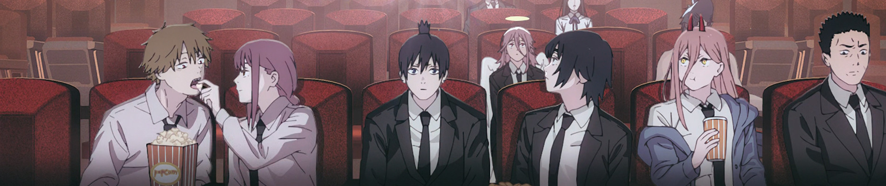

Contracts
People make deals with devils, but every deal has a price.
Chainsaw Man fan page
Explore the characters, story, and strange parts of Chainsaw Man.

Why Chainsaw Man?
People make deals with devils, but every deal has a price.
The story mixes action, comedy, and horror.
The characters want simple things: food, friends, and a normal life.